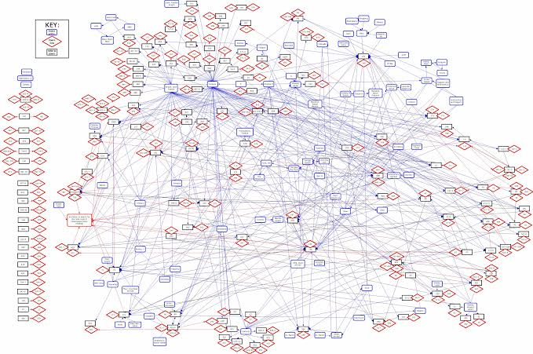
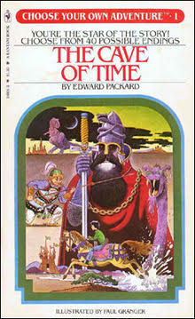

## Acknowledgement of Country
_This DFU workshop is being held on the traditional lands of the Larrakia people.
We pay our respect to elders past, present and emerging._
## Don't take notes from the slides
* This talk is a web page
* You can go back and look at it all (or add to it!) later
## The Internet and the World Wide Web
* Comes out of defence and science research
* The Internet started life as a US Defence research project at DARPA
* World Wide Web invented in 1989 at CERN
* The Internet had only 16 million users in 1995
The Internet and the World Wide Web
From the very early days, people thought about the political nature of the Internet …
… the Internet can be thought of as a utopian project (or set of projects) offering the possibility of radical, historically unprecedented human connection and sharing
## Fast forward to 2019
* 4 billion users, but …
* Over 50% of Internet traffic is non-human
* Streaming TV is now 58% of "downstream" (consumer) bandwidth usage
* The most popular websites by hit count are:
* Google
* Facebook
* Baidu (Chinese Facebook compettitor)
## To-do list for today
1. ~~Learn about WordPress~~
1. ~~Learn to code~~
1. Put some **stuff** _online_!
What is the World Wide Web?
(Okay, it's sort of a gorgeously stupid name)
World: it's meant to be global
Wide: anyone with a host can put content online
Web: Content indexes itself and allows navigation using hyperlinks
### Sidebar: Hypertext
* Includes stuff other than the World Wide Web
* It's kinda related to the cognitive _indexing_ processes vital to many new kinds of work ("knowing how to know things" versus "knowing things")
Sidebar: Hypertext
There is too much to know, so …
Google all the things, then …
Bookmark all the things that are actually good
Nabokov's PALE FIRE visualised as hypertext


## How do we put our stuff on the World Wide Web?
* Write angry comments on Facebook
## How do we put our stuff on the World Wide Web?
* ~~Write angry comments on Facebook~~
How do we put our stuff on the World Wide Web?
So to put our own stuff on the web, we need:
A domain name where people can find us
A host that can hold our content and deliver it to people
To put our stuff into special formats that lets other people view it: HTML, CSS, JavaScript
## To-do list for today
1. ~~Put some **stuff** _online_~~
1. **Purchase a domain**
1. Set up a host
1. Learn how to create content
* Learn some languages!
1. Put the content on the host
1. Point the domain at the host
1. Look at more weird / fun content
Let's go domain shopping
## Sidebar: domain names
* Once people were desperate to own the **.com** or **.net** or **.org** version of their business / org name
* Last ten years: people care a lot less
* There are lots of new, cheap **Top Level Domains** (**.business**, **.fashion**, **.io**, **.map**, **.local**, **.university**)
* It costs just a few bucks to own a domain
## Sidebar: domain names
* Domain "squatting" is still a thing though
* It's against the rules to register domain names that are common typos for other domains
* eg **facebok.com**
snitch-jacket, transitive verb
To imply to your fellow conspirators and rebels that another member of your underground organisation is actually a police informant
## Our new domain
* We now "own" that domain (bought from [**namecheap.com**](https://namecheap.com)
* We can point that domain name at any _host address_ we want
* No one else can use it
* One year's time: we start getting emails telling us to renew it
* If we don't renew it, links to it will stop working
## Hypothetical: what if I want a completely secret domain?
* Always use a VPN to connect, administer and pay
* Use a domain registrar based in a jurisdiction that doesn't have intelligence treaties with your "enemies"
* Give false technical and owner contact info
* Use WHOIS protections anyway
* Pay with scrambled crypto currency
* Still probably not totally secret!
## To-do
1. ~~Put some **stuff** _online_~~
1. ~~Purchase a domain~~
1. **Set up a host**
1. Learn how to create content
* Learn some languages?!?!
1. Put the content on the host
1. Point the domain at the host
1. Look at more weird / fun content
Hosting
Hosting
A host can be thought of as like a "filing cabinet" for your content
that can give it to someone when they ask for it …
... maybe, like a filing cabinet + a butler?
## Hosting … what other stuff?
Different hosting providers offer lots of other things:
* Matching email addresses for your domain
* tips@snitchjacket.fashion
* Protection against DDoS attacks
* Help you set up _subdomains_
* blog.snitchjacket.fashion
* photos.snitchjacket.fashion
* Lots of other stuff … from e-commerce to site analytics
## Some options for hosting
* Option 1: a "server" (ie your computer connected to the internet)
* Option 2: "on the cloud" (ie someone else's computer on the net)
* Option 3: a _static website_ (ie you just need a "storage bucket")
GitHub Pages
A (mostly) free, open hosting option
If you're not paying, other people can see (and maybe use) your content
This Is Actually A Good Thing
Suitable for "static" sites (content only changes when you edit it)
## GitHub Pages
* [GitHub](https://github.com) supports **version control** for changes
* If you get serious about text or code, use version control!
* We will see some basic stuff about how it works as we go through today
* GitHub is a world-leading platform for _collaborating with others_
## Our new GitHub
* We created an account on [**GitHub**](https://github.com)
* We created a special _repository_ ("filing cabinet") with our account
* The information on GitHub is completely public
* We are going to start putting our **stuff** in there
## To-do
1. ~~Put some **stuff** _online_~~
1. ~~Purchase a domain~~
1. ~~Set up a host~~
1. **Learn how to create content**
* Learn some languages?!?!
1. Put the content on the host
1. Point the domain at the host
1. Look at more weird / fun content
Languages of the Web
These all have stupid names
HyperText Markup Language (HTML)
Cascading Style Sheets (CSS)
JavaScript ???
Languages of the Web
The combination of HTML, JavaScript and CSS is powerful enough to replace nearly all your publishing and computing needs …
… with the huge benefit that it's easy to give things to lots of other people
HyperText Markup Language
HTML is for describing the structure of documents along with the text that goes into them …
<!-- The document is made up of "tags" like <html></html>
and <head></head> -->
<html>
<head>
<title>Hello, DFU!</title>
</head>
<body>
<p>Hello, DFU!</p>
</body>
</html>
HTML
HTML describes the structure of a web page
A tag like <html> usually has a closing tag </html>
Tags can be nested inside each other
eg <title> goes inside <head>
eg paragraph tag <p> goes inside block tag <div>
Lots of rules you don't need to know about
## How to learn HTML (or anything)
* Change the _markup_ and the _web page_ changes
* _Shorten the feedback loop_
* Use a tool that _auto-refreshes_ your page
Inventing on Principle
A cool 1h talk about how to learn things fast
## [CodePen](https://codepen.io/)
* Useful tool for experimenting with HTML, JavaScript and CSS
* Lets you see your changes heads up
* Helps you beg, borrow or steal ideas from others
* One of many: see also **jsFiddle**, **JS Bin** etc
## Stylesheet templates, themes and frameworks
* CSS is a rather difficult art
* Many interacting aesthetic decisions make up a coherent style
* Mobile styles are harder still
* Significant industry sector selling "templates" and "themes" with pre-built styles
* Frameworks such as [Bootstrap](https://getbootstrap.com) and [Foundation](https://foundation.zurb.com/) provide a starting point
## 3. Create a "Contact Us" form with [FormSpree](https://formspree.io/)
* FormSpree allows us to set up a <form> element in our web page that will email us when someone submits a message
* We don't need a server or a mail host for this
* We'll also use the [Bootstrap](https://getbootstrap.com/) framework for slicker form styling
## 4. Generative art with [ProcessingJS](http://processingjs.org/)
* ProcessingJS is a port of the [Processing Visual Language](https://processing.org/overview/) to the browser
* It's designed to cross-pollinate the worlds of visual art and software engineering
// amoebaAbstract_01_formatik
// Copyright 2003 Marius Watz
// http://www.evolutionzone.com/
//
// Variation on abstract computational animation
// for the exhibition "Abstraction Now",
// Künstlerhaus Vienna, 29.08-28.09 2003.
## 5. Creating maps with [Mapbox GL JS](https://docs.mapbox.com/mapbox-gl-js/examples/)
* Online maps can be hosted inside web pages you create
* With these maps you can render topical data, symbology, sensor data and more
* Mapbox GL JS is one of several popular JavaScript mapping libraries for the Web
* see also _OpenLayers_ and _LeafletJS_
## 5. Creating maps with [Mapbox GL JS](https://docs.mapbox.com/mapbox-gl-js/examples/)
* To use Mapbox GL JS, we needed an "API Key" (a token identifying us) from our Mapbox account
* This is because a lot of the content we're using is _not ours_ - it's hyperlinked!
* Map tile data for satellite and street maps comes from Mapbox servers
* Mapbox controls usage and may charge you
## 6. Visualising data with [D3.js](https://bl.ocks.org)
* D3.js is a charting and dataviz library based on _pipelined_ transformation of source datasets using JavaScript
* Many, many examples online
* We've created a D3 Force Layout example [here](page6.html)
* This is a graph visualisation that relies on spacing graph nodes using a physics simulation
## 7. 3D environments with [A-Frame](https://aframe.io)
## Other possibilities
* Write your presentations using [RevealJS](https://github.com/hakimel/reveal.js/)
* Host blogs, business sites and others using [Jekyll](https://jekyllrb.com/)
* Host interactive chat-bots with [DialogFlow](https://dialogflow.com/)
* Sound synthesis with [HowlerJS](https://howlerjs.com/) or [Tone.js](https://tonejs.github.io/examples/)
* JavaScript-based game programming with [Elm](https://medium.com/@l.mugnaini/beginner-tutorials-how-to-build-a-game-in-elm-5491d6de8f25)